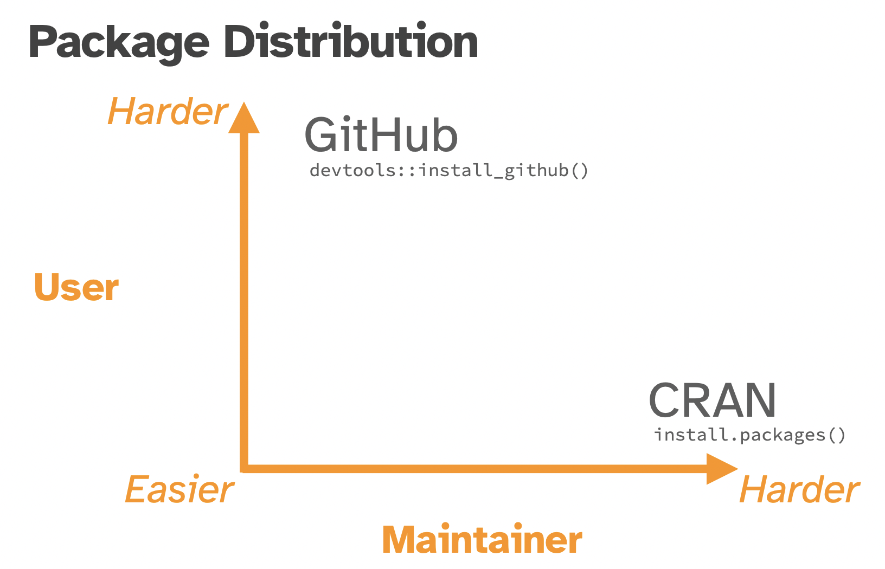

library(tidyverse, quietly = TRUE)
mtcars |>
group_by(cyl) |>
summarize(count = n()) |>
rename("class" = cyl)# A tibble: 3 × 2
class count
<dbl> <int>
1 4 11
2 6 7
3 8 14R packagesLet’s introduce ourselves…
R package and when should I make one?R package is central to generating reproducible codemtcars (composed of 32 observations) have 4, 6, and 8 cylindersR package the answer to our previous automate and sharing inquiries?R packages shared and downloaded?CRAN is a network of ftp and web servers around the world that store identical, up-to-date, versions of code and documentation for
R.
R packages from scratch via a toy exampleR packageThis content has been developed on the basis provided by Chapter 1: The Whole Game (
Rpackages book by Hadley Wickham & Jenny Bryan, 2e) and the UBC course notes Reproducible and Trustworthy Workflows for Data Science by Tiffany Timbers, Joel Östblom, Florencia D’Andrea, and Rodolfo Lourenzutti
edaeda.R scriptR packagesR packagesR packagescreate_package()create_package() will initialize our new package in a directory of our choiceeda package in my Desktop folder for easier referenceDon’ts when choosing your home directory
R package, or GitHub repoR package library (i.e., where we usually instal other packages from CRAN)ignore-type files).gitignore is used by GitHub and lists all “hidden” files created by R and RStudio that aren’t necessary for the repo.Rbuildignore contains all files created via R and RStudio that won’t be necessary when building our package (e.g., eda.Rproj)DESCRIPTION contains the metadata and dependency installation instructions for our packageeda.Rproj is the RStudio project fileNAMESPACE contains the package’s functions to export along with imports from other packagesR/ directory which will contain all package’s functions as .R scriptsuse_git()Software tests allow you to demonstrate to yourself and others, that your code works as expected.
We all test our code informally, what we will talk about here is how to do this more formally so that our testing is reproducible and so we can automate the execution of our tests.
To make this more concrete, here is an example of a formal software test for the count_classes function from our package:
What does this code do? It:
count_classes function, providing the simple as inputcount_classes function returns a tibble object as expected (and if it doesn’t work as expected, it prints out a useful message as to what went wrong)Testability is defined as the degree to which a system or component facilitates the establishment of test objectives and the execution of tests to determine whether those objectives have been achieved.
In order to be successful, a test needs to be able to execute the code you wish to test, in a way that can trigger a defect that will propagate an incorrect result to a program point where it can be checked against the expected behaviour. From this we can derive four high-level properties required for effective test writing and execution. These are:
controllability: the code under test needs to be able to be programmatically controlled
observability: the outcome of the code under test needs to be able to be verified
isolateablilty: the code under test needs to be able to be validated on its own
automatability: the tests should be able to be executed automatically
Source: CPSC 310 & CPSC 410 class notes from Reid Holmes, UBC]
When I am designing tests for my function, I like to think about three broad categories of tests, and then write 2-3 tests for each (or more if the function is complex and takes many arguments):
Simple expected use cases
Edge cases (unexpected, or rare use cases)
Errors
We will come back to these and provide specific examples in a few minutes.
Anytime you think about writing a function!
Write the function specifications and documentation - but do not implement the function.
Plan the test cases and document them.
Create test data that is useful for assessing whether your function works as expected.
Write the tests to evaluate your function based on the planned test cases and test data.
Implement the function by writing the needed code in the function body to pass the tests.
Iterate between steps 2-5 to improve the test coverage and function.
Let’s pretend we haven’t yet written our count_classes function, and follow the workflow I just outlined to develop our function and it’s test suite.
The first thing we should do is write the function specifications and documentation. This can effectively represented by an empty function and roxygen2-styled documentation in R as shown below:
Next, we should plan out our test cases and start to document them.
At this point we can sketch out a skeleton for our test cases with code but we are not yet ready to write them, as we first will need to reproducibly create test data that is useful for assessing whether your function works as expected.
So considering our function specifications, some kinds of input we might anticipate our function may receive, and correspondingly what it should return is listed in a table below:
TBD…
Next, I sketch out a skeleton for the unit tests. For R, we will use the well maintained and popular testthat R package for writing our tests.
With testthat we create a test_that statement for each related group of tests for a function. For our example, we will create the four test_that statements shown below:
Now that we have a plan, we can create reproducible test data for that plan! When we do this, we want to keep our data as small and tractable as possible. We want to test things we know the answer to, or can at a minimum calculate by hand. We will use R code to reproducibly create the test data. We will need to do this for the data we will feed in as inputs to our function in the tests, as well as the data we expect our function to return.
Now that we have the skeletons for our tests, and our reproducible test data, we can actually write the internals for our tests! We will do this by using expect_* functions from the testthat package. The table below shows some of the most commonly used expect_* functions. However, there are many more that can be found in the testthat expectations reference documentation.
testthat test structure:
test_that:Is the object equal to a value?
expect_identical - test two objects for being exactly equalexpect_equal - compare R objects x and y testing ‘near equality’ (can set a tolerance)expect_equivalent - compare R objects x and y testing ‘near equality’ (can set a tolerance) and does not assess attributesDoes code produce an output/message/warning/error?
expect_error - tests if an expression throws an errorexpect_warning - tests whether an expression outputs a warningexpect_output - tests that print output matches a specified valueIs the object true/false?
These are fall-back expectations that you can use when none of the other more specific expectations apply. The disadvantage is that you may get a less informative error message.
expect_true - tests if the object returns TRUEexpect_false - tests if the object returns FALSEYes, we expect that, we haven’t written our function body yet!
FINALLY!! We can write the function body for our function! And then call our tests to see if they pass!
Are we done? For the purposes of this demo, yes! However in practice you would usually cycle through steps 2-5 two-three more times to further improve our tests and and function
In the workflow above, we skipped over where we should put our tests and how to call them in an automated way.
Let’s go to this version of the eda package and explore how to do this:
 Source: https://posit-conf-2023.github.io/pkg-dev/materials/slides.pdf}
GitHub is where almost all R packages start out publishing, and continue publishing development versions between releases.
For this to work, you need to push your package code to GitHub and provide users instructions like this to download, build and install your package:
# install.packages("devtools")
devtools::install_github("username/package")Source: Hornik, K (2012). The Comprehensive R Archive Network. Wiley interdisciplinary reviews. Computational statistics. 4(4): 394-398. doi:10.1002/wics.1212
A stamp of authenticity: passed quality control of the check utility
Ease of installation: can be installed by users via install.packages() and binaries are available for Windows & Mac OS’s.
Discoverability: listed as a package on CRAN
However, CRAN makes no assertions about the package’s usability, or the efficiency and correctness of the computations it performs
Pick a version number.
Run and document R CMD check.
Check that you’re aligned with CRAN policies.
Update README.md and NEWS.md.
Submit the package to CRAN.
Prepare for the next version by updating version numbers.
Publicise the new version.
Source: Chapter 22: Releasing to Cran - R packages book by Hadley Wickham & Jenny Bryan
Your package must pass R CMD check with the current development version of R.
It must work on at least two platforms (CRAN uses the following 4 platforms: Windows, Mac OS X, Linux and Solaris) - use GitHub Actions to ensure this before submitting to CRAN!
If you decide to submit a package to CRAN, follow the detailed instructions in Chapter 22: Releasing to Cran from the R packages book by Hadley Wickham & Jenny Bryan.
In both the US and Canada, software code falls under copyright law
Copyright protects only the language and words used to express ideas, concepts and themes, not the ideas, concepts or themes themselves.
In Canada, the copyright owner is afforded the following rights:
Moral rights:
Economic rights can be transferred to entities that are not the author, whereas moral rights cannot (they can however, be waived).
This is a complicated question, and the answer starts with it depends on the case…
You author the code and you are doing this for yourself (i.e., not for your employer, not for a client, etc).
In such a case, you (the person who typed the code) automatically become the copyright owner.
In both Canada and the USA, you do not need to need to affix the copyright symbol © to your work (some other countries do require this however).
Although the copyright symbol © is not required, it is often used in copyrighted works to clearly identify that the code is protected by copyright.
In both Canada and the US, it is possible (and advisable) to register your copyright as evidence that a copyright exists and who the owner is.
The author of the code was in the employment of some other entity under a contract of service or apprenticeship and the code was written in the course of their employment by that entity. And there exists no agreement (written, or otherwise, and even potentially even presumed) that the employee retains ownership of copyright for the code written during the term of their employment.
Work made in the course of employment is different than a contract for services (in which the author of the code acts more like an independent consultant, and in such a case it does not appear that “work made in the course of employment” would apply).
In this case, the default position is usually that the contractor retains copyright ownership of the work they create, unless the contract specifically assigns copyright to the client.
Q: What if you forgo copyright ownership and want to use any of the code that you wrote again?
A: You would need to negotiate a licence to use the code you wrote, the same way any other third-party would… 😓
To avoid this issue, you could:
Negotiate which code is core to the work (“work-made-for-hire”) and what (pre-built) code (e.g., packages, scripts) are outside the core work and should not (at the beginning of the project!).
Negotiate that the client purchase a license to the code you write (as opposed to hiring you to write the code).
If you publicly share your creative work (i.e., software code), you should let others know if and how they can reuse it!
This is done via the inclusion of a LICENSE or LICENSE.txt file in the base directory of the repository that clearly states under which license the content is being made available.
Unless you include a license that specifies otherwise, nobody else can copy, distribute, or modify your work without being at risk of take-downs, shake-downs, or litigation.
Once the work has other contributors (each a copyright holder), “nobody” starts including you!
A license solves this problem by granting rights to others (the licensees) that they would otherwise not have.
Important considerations when choosing a license include:
Whether you require people distributing derivative works to also require others to distribute their derivative works in the same way.
Whether the content you are licensing is source code, and if it is, whether you want to require that derivatives of your work share the source code
In practice, a few licenses are by far the most popular.
choosealicense.com will help you find a common license that suits your needs.
💡Tip: Choose a license that is in common use! This makes life easier for contributors and users, because they are more likely to already be familiar with the license and don’t have to wade through a bunch of jargon to decide if they’re ok with it.
Imagine you’re a data scientist working for an environmental organization and you developed a tool that analyzes satellite imagery to track deforestation patterns. Your primary goal is to make this tool freely available to researchers and other conservationists to help monitor and combat deforestation, but you still want to retain the copyright to your tool.
But not all my creative Data Science work is code (e.g. visualizations, reports, presentations), so how do I license it?
The Creative Commons licences were created for such works and they are now widely used in academia and the publishing industry.
Source: “How to License Poster” by Creative Commons is licensed under CC BY 4.0
Source: “How to License Poster” by Creative Commons is licensed under CC BY 4.0